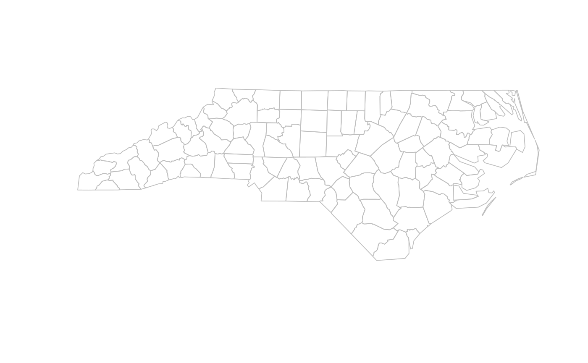
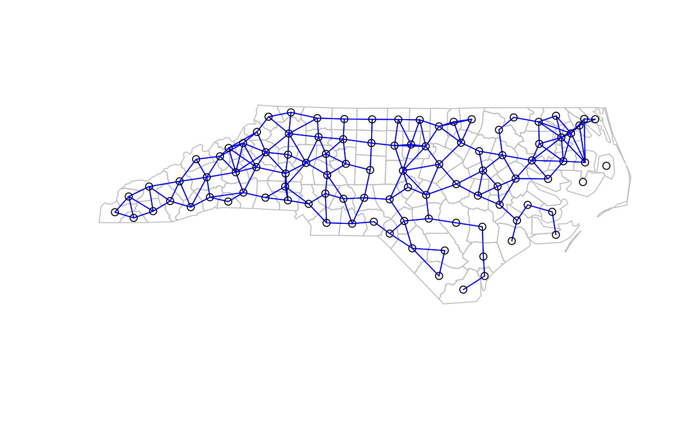

(Use example(nc.sids) to read the data set from shapefile, together with import of two different list of neighbours).
The nc.sids data frame has 100 rows and 21 columns. It contains data given in Cressie (1991, pp. 386-9), Cressie and Read (1985) and Cressie and Chan (1989) on sudden infant deaths in North Carolina for 1974-78 and 1979-84. The data set also contains the neighbour list given by Cressie and Chan (1989) omitting self-neighbours (ncCC89.nb), and the neighbour list given by Cressie and Read (1985) for contiguities (ncCR85.nb). The data are ordered by county ID number, not alphabetically as in the source tables sidspolys is a "polylist" object of polygon boundaries, and sidscents is a matrix of their centroids.
This data frame contains the following columns:
SP_ID SpatialPolygons ID
CNTY_ID county ID
east eastings, county seat, miles, local projection
north northings, county seat, miles, local projection
L_id Cressie and Read (1985) L index
M_id Cressie and Read (1985) M index
names County names
AREA County polygon areas in degree units
PERIMETER County polygon perimeters in degree units
CNTY_ Internal county ID
NAME County names
FIPS County ID
FIPSNO County ID
CRESS_ID Cressie papers ID
BIR74 births, 1974-78
SID74 SID deaths, 1974-78
NWBIR74 non-white births, 1974-78
BIR79 births, 1979-84
SID79 SID deaths, 1979-84
NWBIR79 non-white births, 1979-84
Cressie, N (1991), Statistics for spatial data. New York: Wiley, pp. 386--389; Cressie, N, Chan NH (1989) Spatial modelling of regional variables. Journal of the American Statistical Association, 84, 393--401; Cressie, N, Read, TRC (1985) Do sudden infant deaths come in clusters? Statistics and Decisions Supplement Issue 2, 333--349; http://sal.agecon.uiuc.edu/datasets/sids.zip.
library(rgdal) library(spdep) nc.sids <- readOGR(system.file("shapes/sids.shp", package="spData")[1])#> OGR data source with driver: ESRI Shapefile #> Source: "/home/jn/Documents/spData/inst/shapes/sids.shp", layer: "sids" #> with 100 features #> It has 14 fields #> Integer64 fields read as strings: CNTY_ CNTY_ID FIPSNOrn <- levels(nc.sids@data$FIPSNO) ncCC89_nb <- read.gal(system.file("weights/ncCC89.gal", package="spData")[1], region.id=rn) ncCR85_nb <- read.gal(system.file("weights/ncCR85.gal", package="spData")[1], region.id=rn) plot(nc.sids, border="grey")plot(ncCR85_nb, coordinates(nc.sids), add=TRUE, col="blue")plot(nc.sids, border="grey")plot(ncCC89_nb, coordinates(nc.sids), add=TRUE, col="blue")